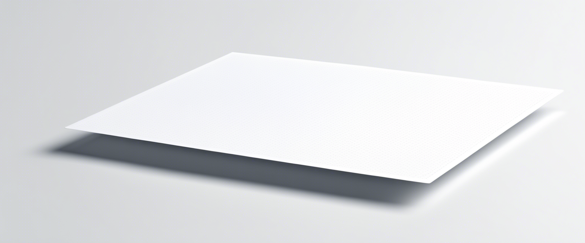

Topology
''If a curved surface is a development of any other surface, the measure of the curvature remains unchanged in every single point.''
Gaussian Curvature:
$$K = \frac{1}{r_1} \frac{1}{r_2}$$
(Note that it needs to be presumed that the surface cannot be stretched, but this in notes!)
